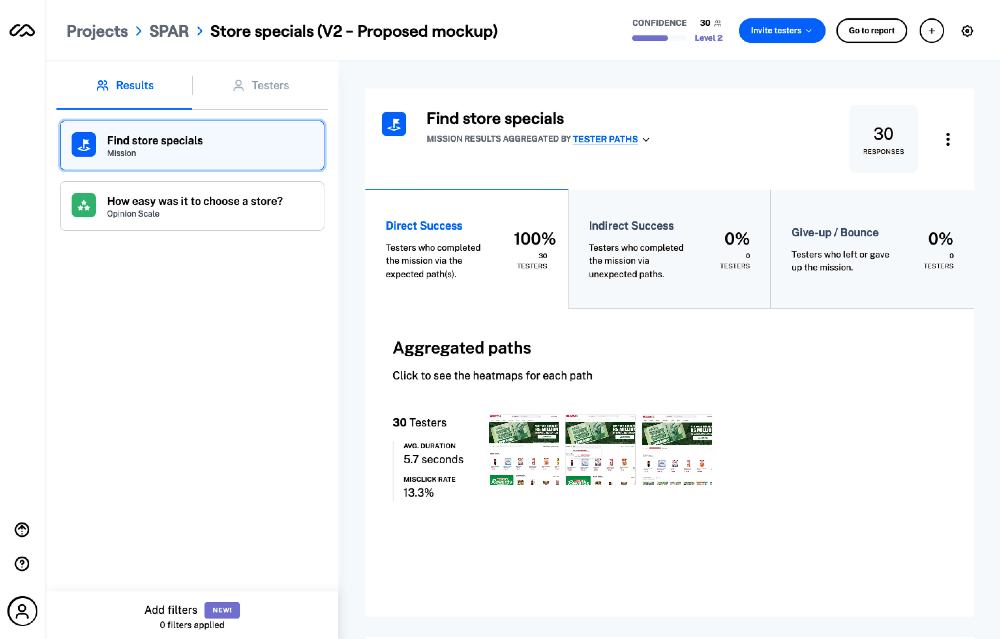

Year
2021
Client
SPAR
Opportunity
While reviewing Hotjar for trends, I noticed that 70% of users were using the website to look for specials at their local SPAR supermarket - it was the most common user journey by a large margin. How could we reduce the number of steps the user had to take?
User Research
As part of the discovery process, I needed to validate the pattern I noticed on Hotjar, so I set out to a nearby SPAR store to do some guerilla user research (with consent from the client, of course). This ethnographic research allowed me to observe users in the real store context and find out if their online behavior matched their in-store one.
I also spoke to a handful of people, across our diverse target audience, and asked them a few questions. The online behavior of SPAR’s users indicated that the majority of customers usually shop at one particular SPAR store, and do not shop around. I wanted to confirm if this was the case. I asked the following questions:
- Why are you shopping at SPAR today? (Did any of the users visit after seeing something on the website?)
- Do you always shop at this SPAR? (Do users shop at different SPAR stores or have a favourite?)
- Have you visited the SPAR website?
- If so, why or why not?
Defining the problem
As hypothesized, the majority of the user research results confirmed that users shop at one specific SPAR store - mostly due to location and price (certain store types are cheaper than other, smaller branches).
85% of research participants shopped at one SPAR store predominantly
An interesting insight from one participant was that she preferred a different supermarket chain completely (a cheaper one), so if she was at a SPAR, it was only because she was away from home and it was close by.
Surprisingly, not all the people we spoke to had visited the website before and the ones that had had some strong opinions about it. The main complaint - one that we’ve heard and seen before - is that the user can’t search product and price. This specific issue is being resolved in a separate project that I am undertaking to re-do the search functionality.
One of the methods I use frequently to help me with ideation is the _How Might We_ way of re-framing problems into solutions.
- How might we remove steps from the current user journey to find store specials?
- How might we leverage the current store functionality to better serve the users?
- How might we display more relevant and personalized information on the homepage?
Together with my team, we came up with the following problem statement, using a persona we developed from our research initiatives:
Stacey, a mom of 2 young children, wants to quickly & easily view the specials at her local SPAR store in order to spend less time shopping.
Developing solutions
Before starting on wireframes or mockups, I brainstorm on paper, usually outside or somewhere away from my desk. In this case, I also looked at competitor SPAR websites (from other countries) and other supermarket chain competitors. During the ideation phase, I often hold collaborative design sessions with our design team. We used to use Miro primarily, but have switched to Figjam, as Figma is our design tool of choice. We would use these sessions to come up with ideas on the fly and spend only a few minutes fleshing them out, so that we could get iterative feedback as we designed. The outcome of the design collab session for this particular project, as with most others, formed the foundation for my high-fidelity mockups.
I then moved into Figma and fleshed out the new homepage design, focusing on the addition of a new store finder control above-the-fold so that the user, once having chosen a store, would only ever need to return to the homepage to find what they were looking for (store specials and other personalized content).
Store Finder control
Previously on the website, users would have to select a province and suburb before they were presented with filtered store results to choose from. I insisted that we needed a way for the user to search, as there were over 1000 stores and the search needed to index everything, from the name to the address and suburb. I often meet with the developers during this phase of the design process to ensure that what we envision is firstly, technically possible. Secondly, I wanted to check that it would not impact implementation, and therefore budget, significantly.
Below is the prototype of the final designed solution:
A/B Testing
In every project, I aim to validate the solutions I have landed on with user feedback, before the design goes into development. My tool of choice is Maze as it’s quick and easy to setup and you can get results within hours. The new design hinged on the user understanding and using the new store selector control below the hero banner. My goal was to measure the time on task for a user to successfully select a store and compare that with the current user journey of going to the store finder, searching and then selecting a store.
The results were very positive and confirmed that we were on the right track. There was a tangible difference between the time of task between the two user journeys. I would only be able to measure the success once it was implemented, but user testing at this stage provided a green light to continue.
Delivery
While I was working on the new store finder control, I approached the client and asked if she was happy for us to spend some time revisiting other aspects of the homepage. The design was outdated, having been developed 6+ years ago and it was in need of a refresh. The client agreed to let us polish the UI, but the constraint of the budget provided was that I could make no functional changes, purely cosmetic ones.
I focused my efforts on the following areas:
- Removing unnecessary navigation items that were not being used.
- Navigation items that the business insisted have prominence, but on analysis, were not getting much traffic.
- Removing a deceptive navigation item
- We had a link to ‘Online Shopping’ which was the most prominent nav item, but when the user clicked through, only 7 of the 1,000 SPAR stores had online shopping, so they were driving the majority of users to a page that would result in the user feeling frustrated. (The exit rate confirmed it)
- As mentioned in the research phase, SPAR was previously hamstrung by their third-party data warehouse, as they only received their promotions as flat PDF images (with text in the image), not as structured, index-able data. The third-party data provider had recently made an update to provide us with what we required, so it was time to update the flat images on the homepage to something that Google could read and users could search for.
- SPAR Rewards is the supermarket chain’s loyalty program and they currently displayed the coupons on the homepage without much information about the program, for e.g. users had to register for this program first, before being eligible. In the new design, I wanted to include a bit more about the program upfront so that there was better context provided.
- Recipes were hugely important to SPAR, as they are the number 1 ranked website for ‘recipes’ in South Africa. I felt that the section deserved more prominence as they invested a lot in the curation of this content and many of our visitors came with the intent to view it.
Below is a before vs after snippet of the homepage design:
I presented the new website to the head of marketing at SPAR with the motivations listed above and she was very happy with the proposed design. This is where the story ends for now, unfortunately, as this project is still underway. I am currently working on the specification document in Quip to assist the developers with implementation. These docs usually include a bit about the project brief, a summary of the user research and most importantly, the user acceptance criteria for quality assurance purposes.
Watch this space for updates in the next month or two...